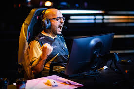
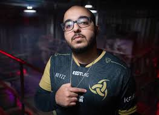
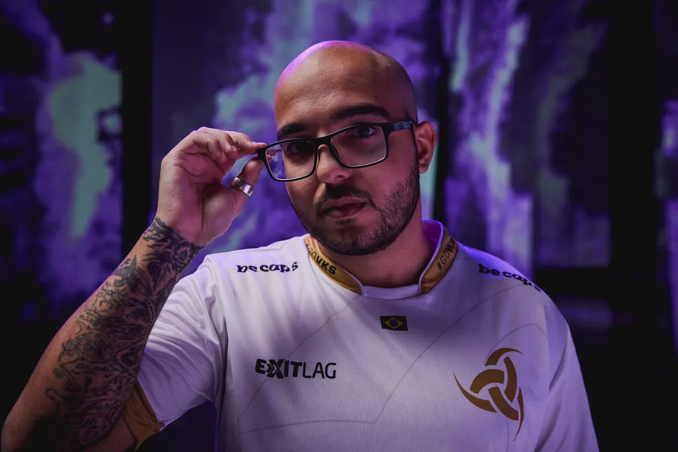
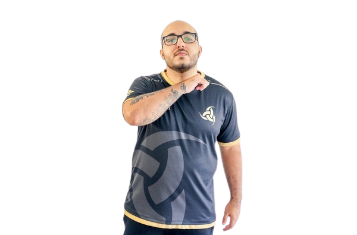

A trajetória de Gustavo “Sacy” Rossi na Team Vikings representou o marco definitivo de sua transição bem-sucedida para o VALORANT e a consolidação de sua imagem como um dos maiores estrategistas do país. Após migrar do League of Legends em 2020 e passar brevemente por elencos como o da BADARANTS (pela RED Canids), Sacy ingressou oficialmente na Vikings em dezembro de 2020
. Naquele momento, havia um ceticismo considerável por parte da comunidade de FPS em relação a um ex-jogador de MOBA, mas ele rapidamente provou seu valor ao adaptar sua visão de jogo analítica para o novo gênero
.


Foi nesta organização que Sacy iniciou uma das parcerias mais vitoriosas da história da modalidade com o argentino Matias “Saadhak” Delipetro
. Embora a dupla não tivesse uma base tática pronta no início, eles construíram uma relação de confiança absoluta através da rotina intensa de treinamentos e da convergência de ideias sobre como o jogo deveria ser jogado
. Atuando como Iniciador e tornando-se uma referência mundial com o agente Sova, Sacy liderou a Vikings em um domínio quase absoluto do cenário brasileiro em 2021, conquistando títulos como o VCT Masters Brasil - Stage 1 e diversas etapas do Challengers
.
A ascensão nacional levou a equipe para os primeiros grandes palcos globais. Sob a liderança de Sacy, a Vikings representou o Brasil no primeiro evento internacional da história do jogo, o VCT Masters Reykjavík 2021, na Islândia, onde alcançaram a 5ª-6ª colocação mundial após serem eliminados pela Fnatic
. No final daquele ano, a equipe também garantiu vaga no VALORANT Champions 2021, o primeiro campeonato mundial oficial
.


Apesar de a Vikings não ter avançado para os playoffs no Champions de 2021, terminando entre a 9ª e 12ª posição, o desempenho individual de Sacy o estabeleceu como uma estrela internacional
. Sua passagem pela organização encerrou-se em dezembro de 2021, quando ele decidiu deixar a equipe para dar início ao projeto "pANcada e amigos", que viria a ser contratado pela LOUD e mudaria para sempre o patamar do Brasil no cenário mundial
.